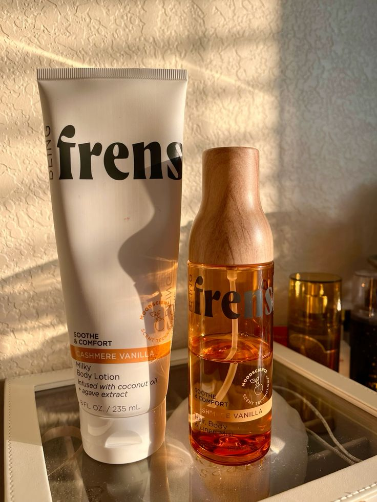

Beauty.
A relaxing massage routine to keep you grounded and calm or celebrate your confidence and joy.
Do you know what’s in your everyday beauty routine? Most people don’t, a shocking new docuseries on HBO reveals. In the four part series, Not So Pretty tackles the underbelly of the beauty industry. From parasitic ingredients that we don’t realize is in our favorite skincare products to how deceptive the “clean” label can be, Not So Pretty aims to highlight what we don’t know — so we can do better. The Frenshe team sat down with co-director Amy Ziering to talk about some of the most shocking revelations from the documentary and how to live an actually toxic-free life while navigating the beauty industry.
.jpg) FRENSHE Cashmere Vannila Set
FRENSHE Vannila Set
FRENSHE Cashmere Vannila Set
FRENSHE Vannila Set